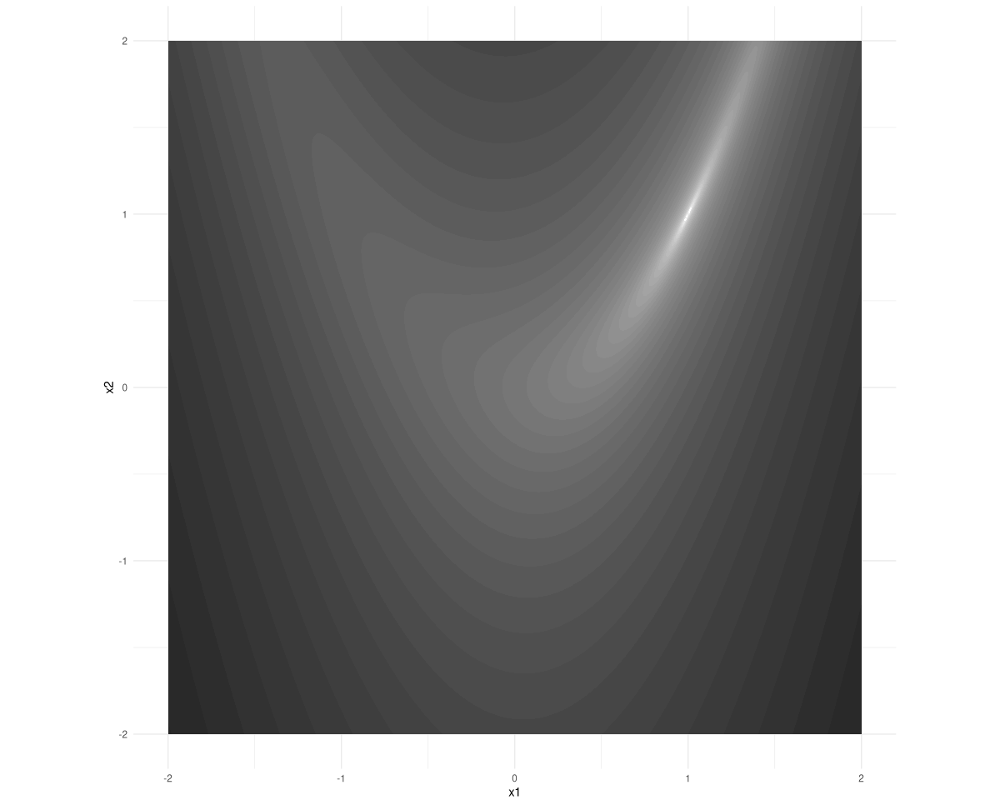

a <- 1
b <- 5
rosenbrock <- function(x) {
x1 <- x[1]
x2 <- x[2]
(a - x1)^2 + b * (x2 - x1^2)^2
}5 autogradを使った函数の最小化
前の二つの章ではテンソルと自動微分について学んだ。 これから二つの章ではtorchの仕組みについての勉強は休んで、その代わりすでに学んだことで何ができるか試してよう。 テンソルだけを使い、自動微分だけの力を借りるだけで、既に二つのことができる。
- 函数を最小化する（つまり、数値最適化を行う）、そして
- ニューラルネットワークを構築して訓練する。
この章では、最小化からはじめ、ネットワークは次章に回す。
5.1 最適化の古典
最適化研究において、ローゼンブロック函数 は古典である。 この函数は二つの変数をとり、(1, 1)で最小となる。 等値線を眺めると、最小は伸びた細い谷の中にあることが分かる。

函数の定義は次の通りだ。 aとbは自由に定めてよいパラメタだが、よく使われる値を用いる。
5.2 最小化を白紙から
シナリオは次の通り。 与えられた点(x1, x2)から出発し、ローゼンブロック函数が最小になる場所を見つける。
前の章で説明した方法に従い、現在の位置における函数の勾配を計算し、それを使って逆方向にに進む。 どれくらい遠くまで行けばよいかは分からない。 大きく進みすぎると、簡単に行き過ぎてしまう。 （等値線図を再度確認すると最小値のの西または東の急な崖に立っていると、これがすぐに生じることが分かる。）
つまり、最良の方法は反復して進むことで、妥当な幅を取り、毎回勾配を再評価することだ。
まとめると、最適化の手順は次のようになる。
library(torch)
# これはまだ正しい手順ではない!
for (i in 1:num_iterations) {
# 函数を呼び現在のパラメタ値を渡す。
value <- rosenbrock(x)
# パラメタについての勾配を計算する。
value$backward()
# 手動でパラメタを更新し、勾配に比例した一部を引く。
# ここはまだ正しくない。
x$sub_(lr * x$grad)
}書かれている通り、コード片は考えを示したもので、（まだ）正しくない。 また、いくつかの必要なものが欠けている。 テンソルxも変数lrやnum_iterationsも定義されていない。 まず、これらを準備しよう。 学習率lrは毎回引く勾配に比例した一部で、num_iterationsは反復する回数である。 これらは実験パラメタである。
lr <- 0.01
num_iterations <- 1000xは最適化するパラメタ、つまり函数の入力であり、最適化の最後に可能な限り最小の函数値に近い値を与える位置であることが望まれる。 このテンソルについて函数の微分を計算するので、requires_grad = TRUEをつけて作る必要がある。
x <- torch_tensor(c(-1, 1), requires_grad = TRUE)初期位置(-1, 1)は任意に選択した。 さて、残っているのは最適化ループを少し修正することだ。 autograd がxについて有効化されていると、torchはこのテンソルに対して行われるすべての演算を記録する。 そのためbackward()を呼ぶたびに、すべての必要な微分を計算しようとすることになる。 しかし、勾配の一部を引くときは、微分を今朝さんする必要はない。 torchにこれを記録しないように指示するために、with_no_grad()を囲む。
ここで説明しておかなければならないことがある。 既定でtorchはgradフィールドに格納された勾配を筑西する。 新しい計算をするたびにgrad$zero_()を使ってゼロに消去する必要がある。
これらを考慮すると、パラメタの更新は次のように書ける。
with_no_grad({
x$sub_(lr * x$grad)
x$grad$zer_()
})完成したコードは次のようになる。 ログをとる文を追加して何が起きているか分かるようにしてある。
library(torch)
num_iterations <- 1000
lr <- 0.01
x <- torch_tensor(c(-1, 1), requires_grad = TRUE)
for (i in 1:num_iterations) {
if (i %% 100 == 0) cat("Iteration: ", i, "\n")
value <- rosenbrock(x)
if (i %% 100 == 0) {
cat("Value is : ", as.numeric(value), "\n")
}
value$backward()
if (i %% 100 == 0 ) {
cat("Gradient is : ", as.matrix(x$grad), "\n")
}
with_no_grad({
x$sub_(lr * x$grad)
x$grad$zero_()
})
}Iteration: 100
Value is : 0.3502924
Gradient is : -0.667685 -0.5771312
Iteration: 200
Value is : 0.07398106
Gradient is : -0.1603189 -0.2532476
Iteration: 300
Value is : 0.02483024
Gradient is : -0.07679074 -0.1373911
Iteration: 400
Value is : 0.009619333
Gradient is : -0.04347242 -0.08254051
Iteration: 500
Value is : 0.003990697
Gradient is : -0.02652063 -0.05206227
Iteration: 600
Value is : 0.001719962
Gradient is : -0.01683905 -0.03373682
Iteration: 700
Value is : 0.0007584976
Gradient is : -0.01095017 -0.02221584
Iteration: 800
Value is : 0.0003393509
Gradient is : -0.007221781 -0.01477957
Iteration: 900
Value is : 0.0001532408
Gradient is : -0.004811743 -0.009894371
Iteration: 1000
Value is : 6.962555e-05
Gradient is : -0.003222887 -0.006653666 1000回の反復後、函数値は0.0001よりも小さくなった。 対応する(x1,x2)の位置はどこになったか。
xtorch_tensor
0.9918
0.9830
[ CPUFloatType{2} ][ requires_grad = TRUE ]これは真の最小(1,1)にかなり近い。 気が向いたら、学習率がどのような違いを生じるか試してみよう。 例えば、0.001と0.1をそれぞれ使ってみるとよい。
次の章では、白紙からニューラルネットワークを構築する。 そこで最小化するのは 損失函数 、つまり回帰問題から現れる平均二乗誤差である。